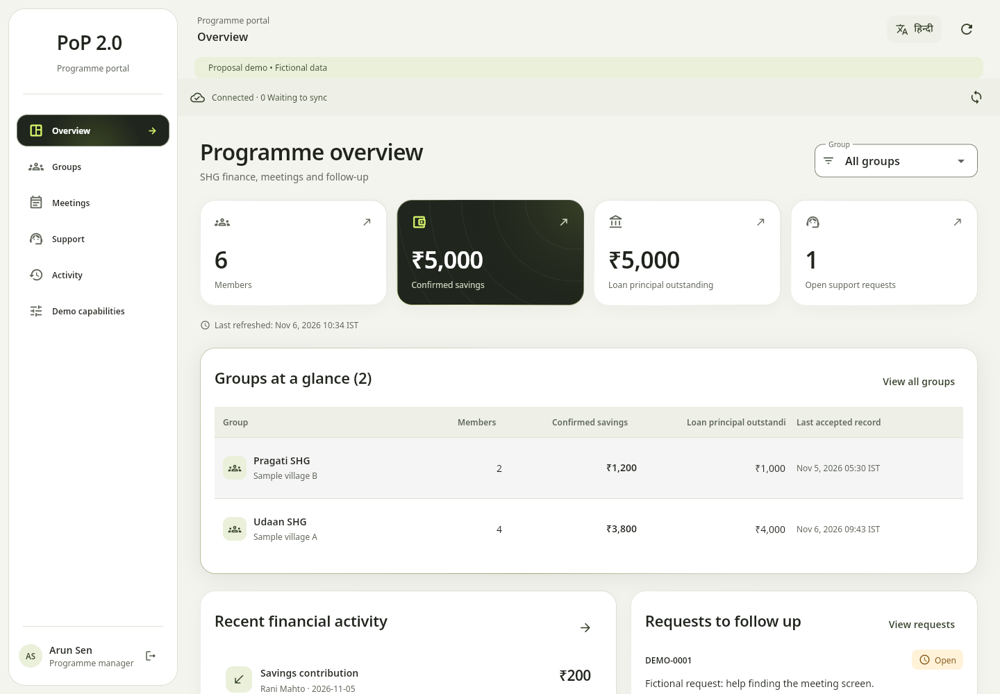
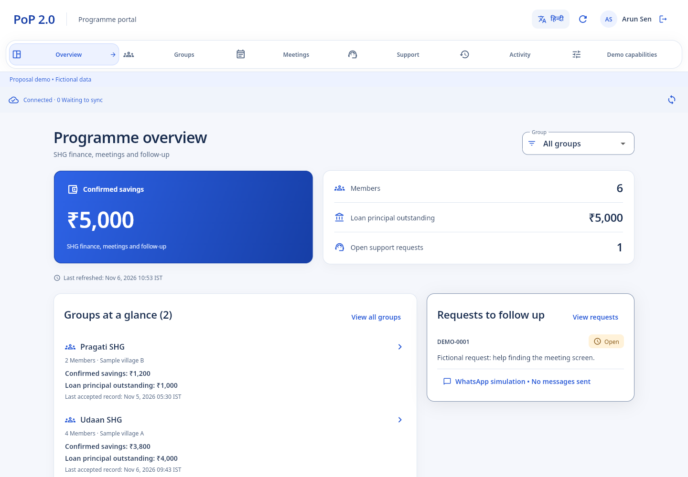
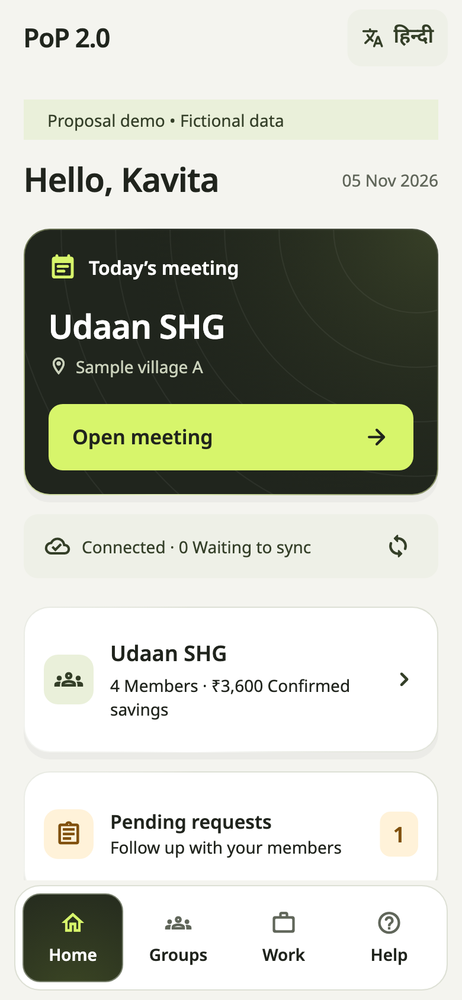
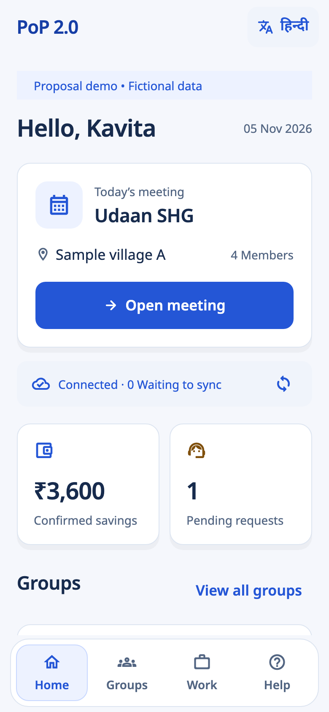
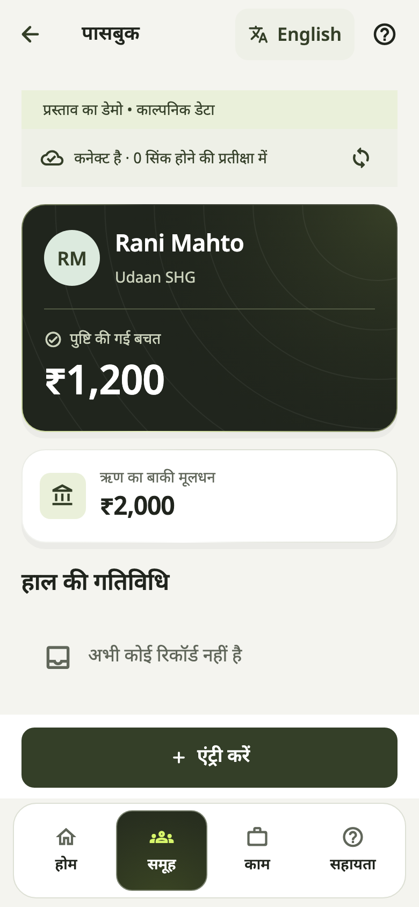
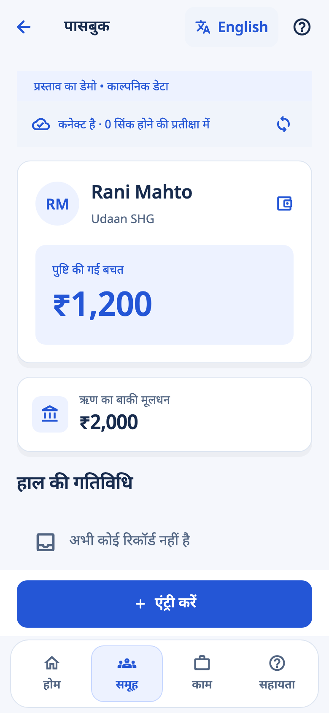

PoP, redesigned.
Compare the previous olive/lime direction with the new blue-and-white layout.
Previous: left rail and four cards

Now: top navigation and focused programme workspace

Previous: dark meeting card and stacked rows

Now: meeting panel and two-column summaries

Previous passbook

New identity and balance hierarchy
